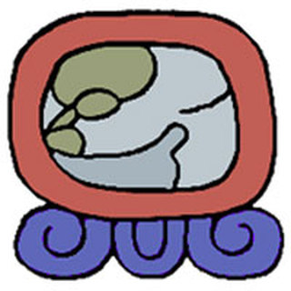

Nawal
keme
es el simbolo de la muerte simbolo de la disolucion final de todas las cosas buenas y malas sifnifica tecolote y muerte es el renacimiento sifnificado que se expresa a traves de los sagrados granos de tz´ite o pelo de pito es dia propicio para pedir por la salud de los enfermos y para hacer ofrendas poque progrese el negocio
funcion espiritual
es un dia bueno para el negocio
dia especial para comunicarse con los ancestros
fortalecimiento de la vida
dia para contrarrestar enfermedades
caracteristicas de las personas nacidas en keme
su origen es tijax y su destino i´x
